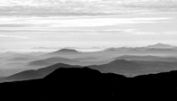

Abstract
Latitude and longitude are traditional measures by which a spatial direction of the ellipsoid normal - and thus a location of a point on the Earth's surface - is both deterimed and defined numerically. This numeric definition is therefore directly related to classicall positional measurement, but it is particularly ill-suited to computations on a digital computer. For such use, normal is best represented in vector form, using three direction cosines as the numbers representing point coordinates. This coordinate notation can be transformed into a particular two-number form, called here "compact direction cosines". This paper explores the characteristics and utility of such coordinates.
 Representation of the physical surface of the Earth in digital systems is a subject of considerable current attention. As the area of the coverage of such systems increases, it becomes necessary to provide methods to model very large, continuous surface conglomerates in a manner which does not violate the surface integrity (i.e., which does not impose hard partitioning as an artifact of the digital model), but, at the same time, provides an efficient spatial index to a small section of the surface of transient interest.
introduction